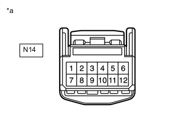
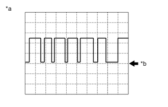

CHECK TIRE PRESSURE WARNING ECU AND RECEIVER

| *a | Front view of wire harness connector (to Tire Pressure Warning ECU and Receiver) |
Disconnect the N14 tire pressure warning ECU and receiver connector and measure the voltage or resistance on the wire harness side.
| Terminal No. (Symbol) | Wiring Color | Terminal Description | Condition | Specified Condition |
|---|---|---|---|---|
| N14-1 (IG) - N14-12 (GND) | B - W-B (*1) G - W-B (*2) |
IG power source | Power switch on (IG) | 10 to 16 V |
| N14-7 (+B) - N14-12 (GND) | B - W-B | Power supply (from auxiliary battery) | Always | 10 to 16 V |
| N14-12 (GND) - Body ground | W-B - Body ground | Ground | Always | Below 1 Ω |
*1: w/ Blind Spot Monitor System
*2: w/o Blind Spot Monitor System
Connect the N14 tire pressure warning ECU and receiver connector.
Measure the voltage and resistance according to the value(s) in the table below. If the result is not as specified, the ECU may be malfunctioning.
Tech Tips
Measure the values on the wire harness side while the connector is connected.
| *a | Component with harness connected (Tire Pressure Warning ECU and Receiver) |
- | - |
| Terminal No. (Symbol) | Wiring Color | Terminal Description | Condition | Specified Condition |
|---|---|---|---|---|
| N14-3 (CLSW) - N14-12 (GND) | L - W-B | Tire pressure warning reset switch |
|
Below 1.5 V |
|
8 to 15 V | |||
| N14-4 (RDA) - N14-12 (GND) | LG - W-B | Output signals | Power switch on (IG) | Pulse generation (see waveform 1) |
| N14-5 (PRG) - N14-12 (GND) | GR - W-B | Input signals | Power switch on (IG) | Pulse generation (see waveform 1) |

| *a | Example |
| *b | GND |
Using an oscilloscope, check waveform 1.
| Item | Contents |
|---|---|
| Terminal | N14-4 (RDA) - N14-12 (GND) N14-5 (PRG) - N14-12 (GND) |
| Tool setting | 5 V/DIV, 5 ms./DIV. |
| Vehicle condition | Power switch on (IG) |
Tech Tips
The waveform shown in the illustration is an example. If the tester displays a waveform that alternates between high and low, where high is a voltage that is between the IG power source voltage and a voltage 2.2 V lower than the IG power source voltage, and where low is a voltage of between 0 and 1.2 V, the ECU can be judged normal.